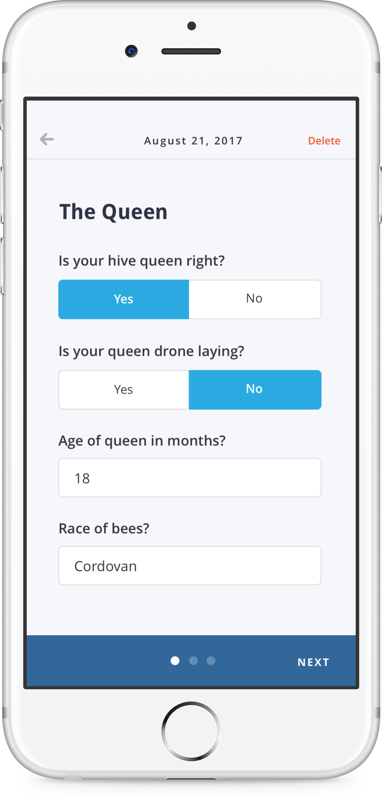
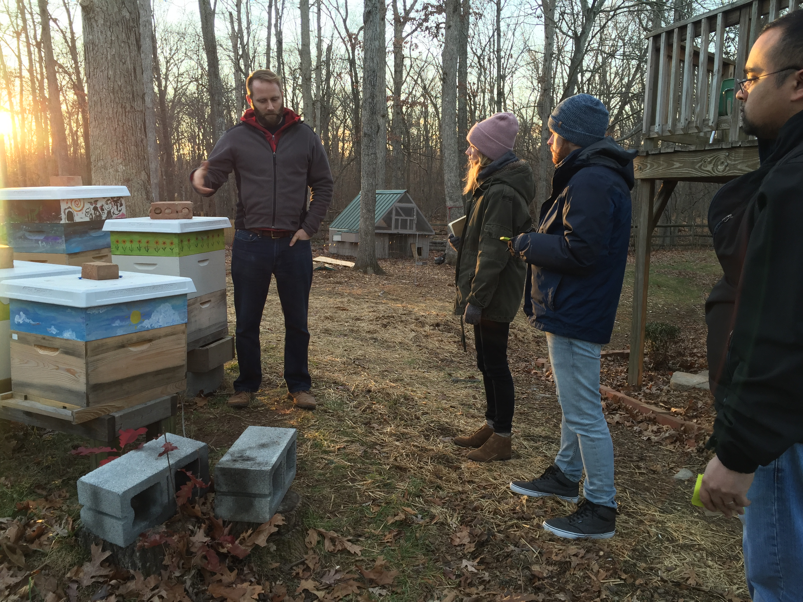
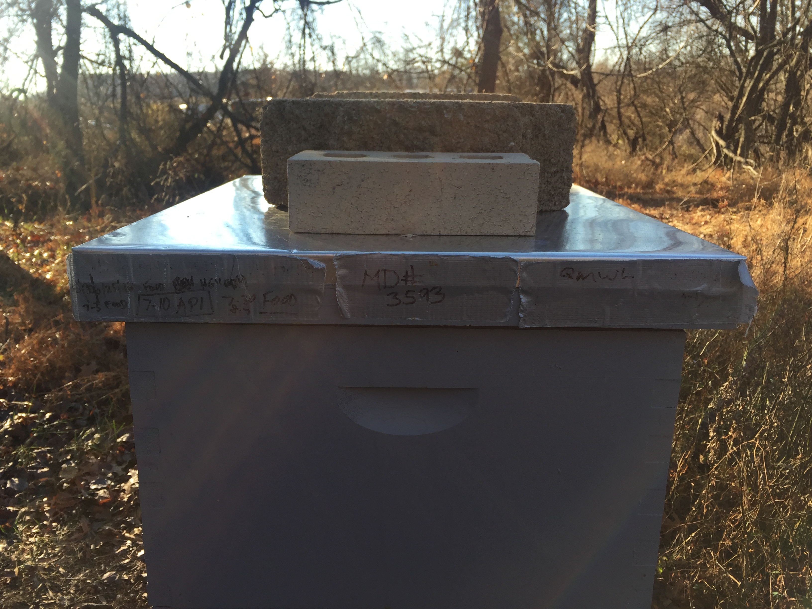
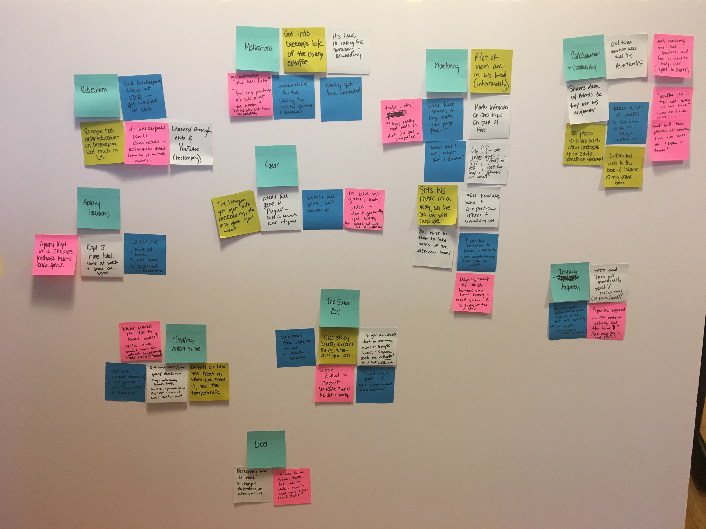
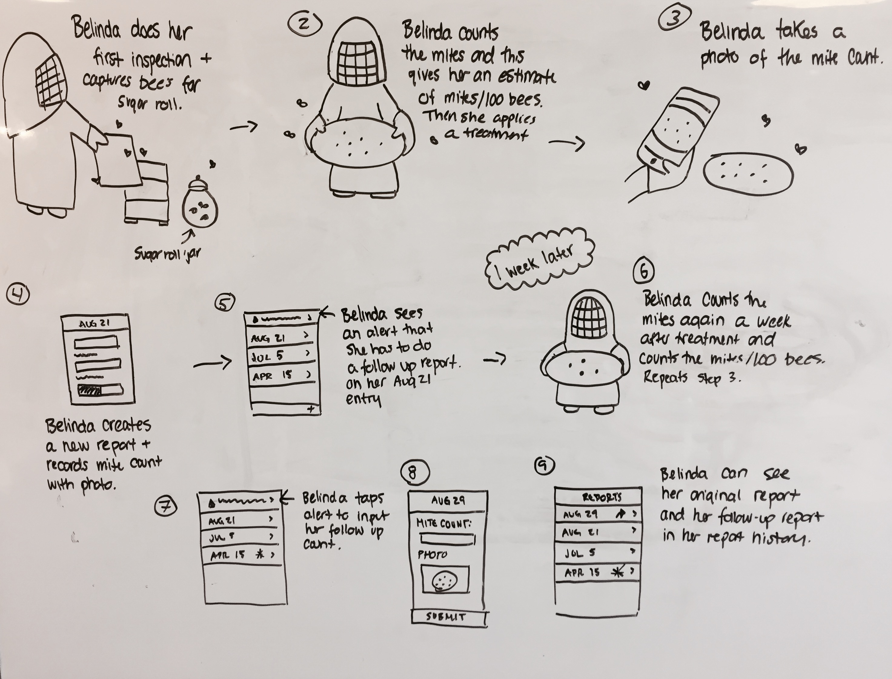

HiveScience
HiveScience is a mobile app that allows hobbyist beekeepers to participate in a citizen science project by reporting on varroa mite infestations in their apiaries. Varroa mites are a major cause of the plight of the bees and the EPA is currently conducting research on contributing factors and treatment.
In the United States, honey bee pollination alone adds more than $15 billion in value to agricultural crops each year. Honey bee colony numbers are threatened by a variety of external forces. The goal of the project is to build and engage a network of citizen scientists to gather valuable data on the status of honey bee hive health. The project explores whether the status of hive health is measureable in biomarkers found in honey.
It is the first project to specifically focus on biomarker analysis in honey and is the first bee project in EPA to crowdsource data and samples from hobbyist beekeepers.
Goals
The project focuses on two main goals. The first is to contribute to a better understanding of bee colony health and the second is to provide a teaching tool that encourages beekeepers to monitor for Varroa mites and learn more about their own hives by developing a much-needed strategy for monitoring colony health.
Discovery
We started off by identifying project risks and goals and defined our assumptions about the hobbyist beekeeper. This helped us uncover some big questions.
What is their motivation?
How can we get beekeepers to engage in the study? Is the opportunity to participate as a citizen scientist enough or do we need to include features that are helpful to their beekeeping efforts as well like the ability to view trends?
We visited a number of beekeepers at their apiaries who were very enthusiastic to take part in our research. They walked us through their process, motivations, and current methods.
What is their environment like?
Is it reasonable to assume they’ll pull out their mobile devices while tending to their hives? What kind of Varroa mite counting methods are they most comfortable with?
While we’re conducting user interviews we are acting as sponges, absorbing as much information as we can without ideating too early in the process. We try to stay as open minded as we can to new information so that we know we’re framing our solutions based on real information instead of our assumptions.
We noticed beekeepers kept notes on individual hives. One beekeeper used duct tape to keep specific information. This tells us specific points of data hes interested in collecting. Instead of asking our users what they would do, we want to learn what they do do.
What does their process look like?
Are they going to be entering information while out at their hive or will this happen afterwards? At what point do we ask them for information?
Exploratory research helped us understand who exactly these people are, what kind of environment they’re in and what motivates them. It gave us a better understanding of their implicit and explicit needs so that we were able to make more holistic decisions about our solution.
We then did some synthesis and analysis of user interviews and mapped our findings into themes. This helped us pull out insights about our users and their behavior.
Framing
Once we had a good understanding of our users needs and goals we started mapping out how we intended on solving the problem. We could balance what we knew about them with what was required for the study. Based off this I did some rapid prototyping and started testing our ideas with users.
Learnings
We quickly learned that most of our beekeepers top motivations were their interest in the plight of the bees. This meant we could focus on the quality of the information being reported to the study before prioritizing reporting features useful to beekeepers themselves. We discovered the mite counting methods they'd be most likely to conduct. It was important for the study that the methods were consistent. We also learned that most beekeepers are already taking notes on their hives and entering data on their phone's which makes the barrier to adoption much easier.
HiveScience is an open source project funded by the EPA. Check it out on Github